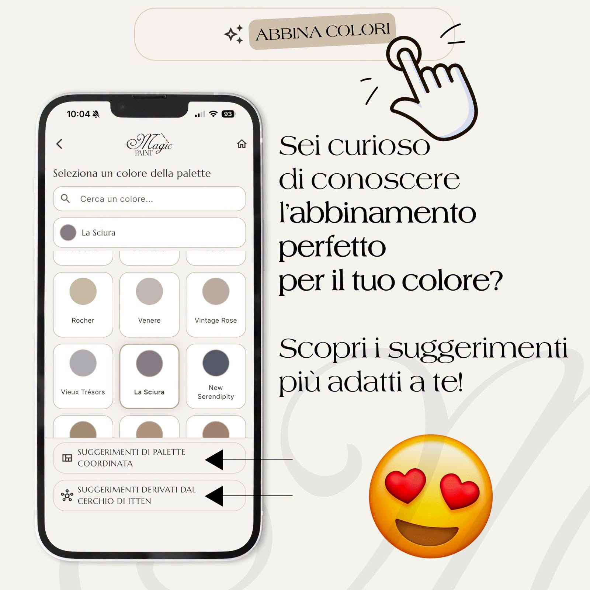
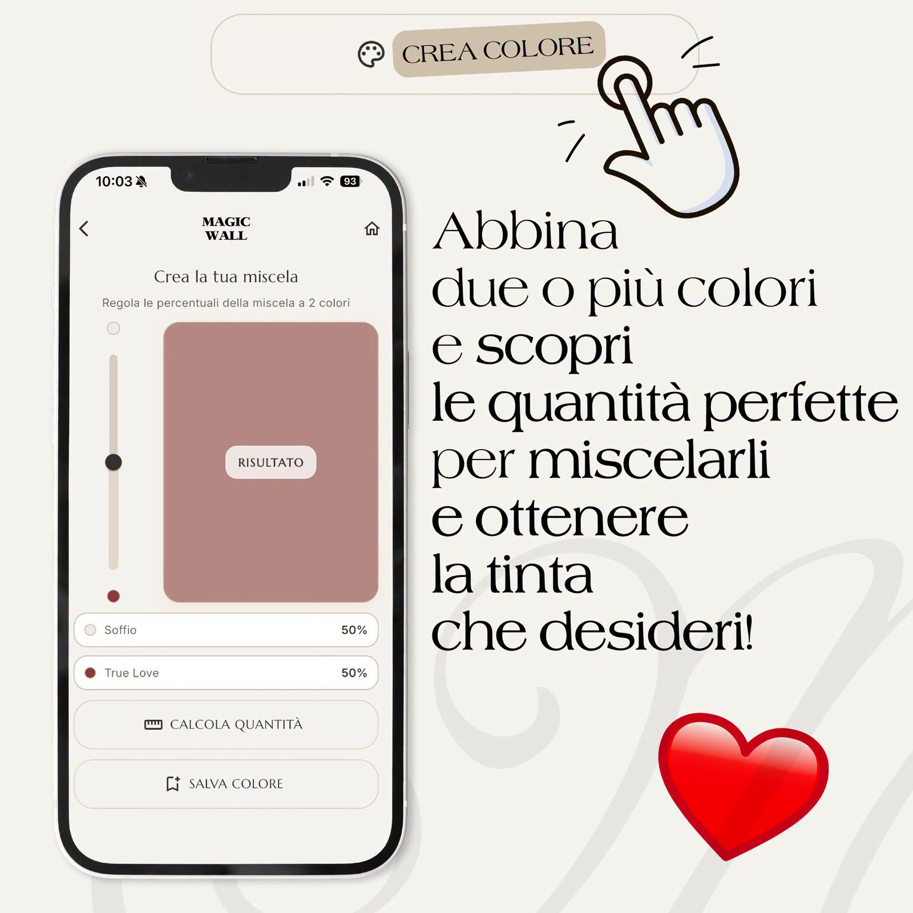
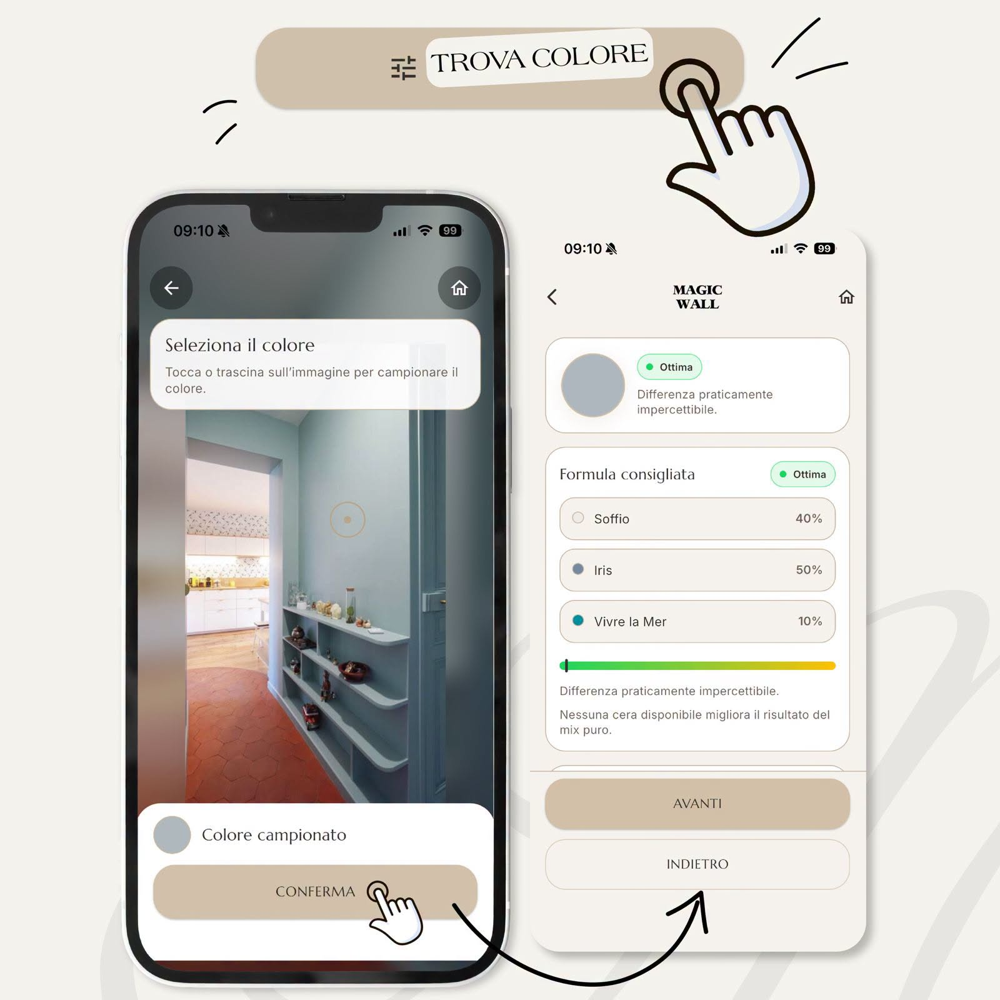
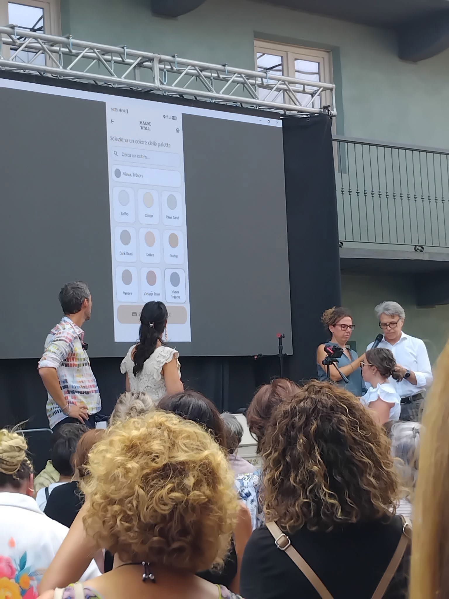

Zephyros Studio · Success Stories
Magic Paint App — when an intuition becomes a Success Story
From the first idea to the official launch: a project born from a passion for color, developed through Business Analysis, Project Management, experimentation and close collaboration with the client.

From intuition to project
Some projects begin with a client requirement; others are born from an intuition, a passion and a fortunate sequence of events.
The Magic Paint project definitely belongs to the second category.
At Zephyros Studio, we have always been passionate about art, color and furniture restyling. That passion led to an idea: creating an application capable of recognizing a color and suggesting the most suitable combination of paints to reproduce it.
When we presented a prototype — not merely an abstract concept — to Magic Paint, we discovered that the company was looking for a partner to continue its digital transformation journey through a new mobile application.
The meeting between these two realities gave rise to the project.
The complexity of color
Working with color is far more complex than it may seem. One of the first challenges we faced was the variability introduced by different devices. Two smartphones can capture the same scene and return different color values because of sensor characteristics, image-processing algorithms and different color-balance behavior.
Environmental conditions add another layer of complexity: natural or artificial light, color temperature, shadows, reflections, as well as the characteristics of the surface and the techniques previously used on it, can significantly alter the color perceived by the camera.
But the complexity did not end with color acquisition. Once the target color had been identified, we needed to find the most appropriate combination within the Magic Paint palette and determine how the different paints behaved when mixed together.
This is where we encountered one of the most interesting aspects of the project: the mixing of pigments and the chalk component of these particular paints do not always behave in a perfectly linear way.
Mathematical models are essential to guide the calculation, but the real behavior of the paints also requires observation, tests, corrections and calibration.



The promotional visuals intentionally retain their original Italian text.
Technology, experimentation and Artificial Intelligence
To address these challenges, we combined software development, data analysis, mathematical models, field experimentation, restyling expertise and vertical knowledge of the specific product.
One of the central themes was the distance between colors. Turning the perception of “how similar two colors are” into a measure that can be used by an algorithm means working in color spaces and mathematically comparing values that may behave very differently to the human eye. This is where Artificial Intelligence becomes part of the app.
Technology, however, remained a tool serving a concrete need: allowing users to start from a color they see, love or want to reproduce, and guiding them toward a possible combination that can be created with Magic Paint products.
Quality, Key Users and Business Analysis
From the earliest stages, we shared a very simple principle with the client: an application carrying the Magic Paint brand could not merely “work”; it had to be consistent with the prestige, reliability and quality that the brand represents for its customers.
This had a concrete impact on how the project was managed. For approximately two months, two groups of Key Users were involved, selected among restyling professionals with extensive experience using Magic Paint products.
They were not simply testers, but people capable of evaluating the application in real-world scenarios and identifying details that would have been difficult to uncover through technical testing alone. We collected feedback, observations, suggestions, testimonials and field-test results, progressively turning them into product improvements.
This continuous exchange made it possible not only to identify problems, but above all to better understand how users would actually use the application.
This is where more than thirty years of experience in Business Analysis played a fundamental role. One of the most common risks in digital projects is falling in love with the solution before fully understanding the problem; to understand needs and objectives properly, you need to know how to ask the right questions.
In this case, Magic Paint's needs, Key User feedback, product characteristics and technical constraints were progressively transformed into requirements, features and development priorities.
Project Management and managing uncertainty
Alongside Business Analysis, a second fundamental element was Project Management.
Developing a digital product inevitably involves different skills, expectations and constraints: client, developers, users, technologies, timelines, testing, store releases and subsequent evolutions must all converge toward the same outcome, focused on generating Value for the client and users.
In a highly innovative project, not everything can be defined perfectly at the beginning. Some answers only emerge through experimentation, and some requirements become clear only after observing user behavior.
Methodology therefore does not eliminate uncertainty; it helps manage it, keeping the project under control while the solution evolves.
The launch and the first results
After months of development and testing, the most important moment arrived: the Magic Paint App was officially presented during the event organized to celebrate Magic Paint's 10th anniversary, the company's most important event of the year.
For us, this meant bringing to the stage not just an application, but the result of months of work shared with the client and with all the people who had contributed to its development and validation.

User response exceeded expectations: in the first three days after launch, the application surpassed 6,000 total downloads across Android and iOS.
An important number, certainly, but the most interesting result was something else: the project did not end with the release. It immediately generated the first evolutions and new ideas to further expand the functionality and experience offered to users.
This means that the product was not perceived simply as something to “deliver”, but as an asset worth continuing to invest in. This is where the concept of value becomes tangible: when the product is used, generates interest, creates new possibilities and opens the way to further development.
Why was the project successful?
Several elements worked together.
First, the professionalism of the stakeholders involved and their willingness to engage openly throughout every phase of the work.
Domain knowledge, essential when developing a solution that operates in a complex world such as color and restyling.
Experience in Business Analysis, which made it possible to turn needs, observations and feedback into requirements and concrete decisions.
Project Management, needed to coordinate activities, people, priorities, risks and change while keeping a constant focus on the objective.
The use of modern technologies and development methodologies.
And then an element that does not usually appear in project diagrams, but often makes the difference: passion for the topics we were working on, both on our side and on the side of the owners of one of the leading companies in the sector.
Finally, a choice shared from the very beginning by Zephyros Studio and Magic Paint: putting Quality first, dedicating the time, attention, availability and commitment needed to achieve the result.
Innovation does not simply come from using a new technology.
It emerges when business expertise, domain knowledge, technology, method and people work together toward the same objective.
For Zephyros Studio, this is the most concrete definition of a Success Story.